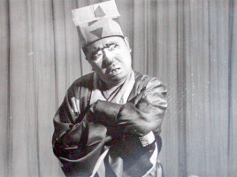

周裕祥
周裕祥（1911-1985），川剧演员,一代名丑，川剧表演、导演艺术家。原名周永祥，字焕章，四川犍为人。十五岁搭班演出。建国后，历任重庆市实验川剧院演员、导演，重庆市川剧院艺委会主任，四川省川剧院副院长，四川省川剧艺术研究所副所长。1952年获第一届全国戏曲观摩演出演员二等奖。长于袍带丑、褶子丑。尤以“矮子功”著称。擅演《西川图》、《江油关》、《晏婴说楚》等。
早期生涯
1917年，周永祥随母顺江而下到了重庆，迫于生活，经人介绍，进入以名丑傅三乾为首的川剧“十大领首”创办的裕民科社学艺，拜傅三乾为师，更名裕祥。30年代初，周裕祥与傅三乾同在章华大戏院献艺，在业师的亲切教导、指点下，艺事和声名与日俱增。不久，“改换门庭”，成为又新剧场的当家角色。其时，时装戏风靡川剧舞台，周裕祥在《一封断肠书》、《哑妇与娇妻》、《是谁害了她》、《黑化大观》等戏中扮演西装革屐的时尚青年.一代丑角大师的入室弟子，竟先以“时装小生”饮誉剧坛，名重一时，成为戏迷心中的“青春偶像”。
周裕祥塑造的艺术形象众多，包括褶子丑、官衣丑、襟襟丑、袍带丑、方巾丑、烟子丑等各种类型,无不栩栩如生、千姿百态。《晏婴说楚》中的晏婴，把一个身材矮小却又才高八斗、有胆有识的贤臣形象刻画得沉着机智、神采飞扬；《西关渡》中的陈采，人物的阴险狠毒暴露无遗；《花子骂相》中的孙小二演得来别具一格，毕现人物人虽微而言重，貌虽丑而实美的个性；其他如《西川图》中的张松、《赠袍跪门》的须贾、《醉隶》中的许仰川、《舂陵台》中的宋康王、《江油关》中的马邈、《审玉蟹》中的宁欣等一个个都感人至深，耐人寻味。
后期生涯
周裕祥在解放后的30多年舞台生涯中，共导演了大小剧目数十个，是当代经验丰富、成就最高的导演之一，编导了《新美人计》、《皇帝与妓女》、《赤胆忠心》、《闯王遗恨》等剧目。1955年，周裕祥被派送往中央戏曲学院进修导演专业，拓宽了知识领域，提高了美学修养。1959年，中国川剧团出访东洲四国，周裕祥担任总导演，突出而生动的表现了《芙奴传》一剧。
在表演和导演上分别取得的重大成就，犹如周裕祥的坚强两翼，载负着这位艺术家在川剧广阔的天地里自由翱翔，贯古通今，雄视一代。